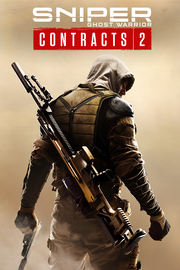

Sniper Ghost Warrior Contracts 2
Detalles
|  | |
| Tiempo de juego | No Jugado |
| Última actividad | Nunca |
| Añadido | 11/6/2024 15:35:16 |
| Modificado | 2/5/2025 0:19:13 |
| Estado de finalización | No Jugado |
| Librería | Playnite |
| Fuente | 1 TB EXT |
| Plataforma | PC (Windows) |
| Fecha de lanzamiento | 6/4/2021 |
| Puntuación de la Comunidad | 82 |
| Puntuación de la Crítica | |
| Puntuación de usuario | |
| Género | Acción |
| Desarrollador | Underdog Studio |
| Editor | CI Games |
| Característica | Cloud Saves Compat. Parcial Con Mando Logros De Préstamo Familiar Un Jugador |
| Enlaces | Punto de encuentro Discusiones Guías Noticias Página de la tienda PCGamingWiki Logros |
| Tag | 3D Acción Asesinos Bélicos Combate Disparos Física FPS Francotiradores Militares Modernos Multijugador Personalización de armas Primera persona Realistas Sangriento Sigilo Tácticos Un jugador Violentos |
Descripción

Banquete del carnicero: expansión gratuita
Sniper Ghost Warrior Contracts 2 ahora incluye ‘Banquete del carnicero’, una expansión que añade toda una región nueva, el Templo, con objetivos totalmente nuevos y algunos de nuestros contratos más letales hasta la fecha.
Esta espectacular zona desértica, llena de fértiles oasis, cataratas impactantes y templos misteriosos puede resultar pintoresca, pero no te confundas: no se trata de un paraíso turístico. Tras los recientes disturbios en Kuamar ha aparecido una nueva amenaza; un movimiento dirigido por el infame Mahmoud Zarza... conocido como ‘el Carnicero’. Es impredecible y extremadamente peligroso (de ahí su apodo). Necesitamos que lo elimines a él y a sus aliados, que representan una amenaza igual de elevada, para así poner fin al rápido ascenso de esta facción... como mejor sabes.
---
Sniper Ghost Warrior Contracts 2 es la entrega más desafiante de la prestigiosa serie hasta la fecha e incluye disparos a larga distancia, con objetivos a más de 1000 metros. La dramática campaña de un jugador, ambientada en Oriente Medio en la era moderna, aporta combate táctico de gran intensidad en pleno territorio enemigo.
En el papel de Raven, un francotirador a sueldo, completa una serie de contratos en una región sin ley de Oriente Medio cerca de las fronteras del Líbano y de Siria. Tu misión, prácticamente imposible, es derrotar a un sindicato criminal y llevar a sus integrantes ante la justicia.

A los veteranos de la serie les espera un reto, porque Sniper Ghost Warrior Contracts 2 exige un gran nivel de habilidad, concentración y precisión, ya que por primera vez en la serie muchos de los objetivos están situados a más de 1000 metros.

Contracts 2 ha sido desarrollado por el mismo equipo que el juego original y lleva las cosas al límite con la experiencia más realista. Domina un arsenal basado en equipo militar real, explora grandes terrenos llenos de detalle y enfréntate a los enemigos más vivos de la serie.

Usa tu novedoso equipo para completar los contratos una y otra vez de diferentes maneras. Repite la misión con enfoques diferentes para completar todos los objetivos e invierte tus ganancias en mejorar tu equipo y armamento.

En Contracts 2 hemos añadido más fidelidad, optimizaciones visuales, un aumento de FPS y un motor mejorado, lo que hace que esta sea la entrega más espectacular de la serie. Y con la cámara cinemática de bala, puedes disfrutar de todos los detalles sangrientos de tus asesinatos sigilosos.
Características:
- Elimina a diversos objetivos combinando combate en distancias cortas y disparos de francotirador a distancias extremas como asesino a sueldo.
- Toma decisiones tácticas y usa el sigilo para superar los desafíos de la emocionante campaña de un jugador.
- Explora 5 mapas únicos y extensos ambientados en la zona más conflictiva de Oriente Medio.
- Completa 21 nuevos contratos y diversas operaciones secundarias.
- Domina una experiencia de francotirador para expertos con un arsenal de armas y equipo realista.
- Vuelve a cada contrato con enfoques diferentes para completar todos los objetivos y obtener las máximas recompensas.
- Experimenta un nuevo nivel de fidelidad con mejores gráficos y un motor de juego mejorado.